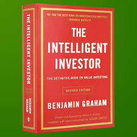

The Intelligent Investor

Benjamin Graham
Sinopsis
Buku ini mengeksplorasi hubungan unik antara manusia dan uang — bukan dari sisi teknis investasi, melainkan dari sisi psikologis dan perilaku. Morgan Housel menjelaskan bahwa kesuksesan finansial tidak selalu ditentukan oleh seberapa pintar seseorang, melainkan oleh bagaimana ia bersikap terhadap risiko, keberuntungan, ketamakan, dan ketakutan. Dengan gaya bercerita yang ringan dan penuh wawasan, Housel menggabungkan kisah nyata dan penelitian untuk menunjukkan bahwa keputusan finansial sering kali lebih dipengaruhi oleh emosi daripada logika.
Inti dari buku ini adalah bahwa memahami diri sendiri lebih penting daripada memahami pasar. Dengan mengenali bias, kebiasaan, dan motivasi pribadi, seseorang dapat mengambil keputusan keuangan yang lebih bijak dan berkelanjutan. Housel juga menyoroti pentingnya kesabaran, pengendalian diri, dan pandangan jangka panjang — karena kekayaan sejati tidak datang dari keputusan cepat, melainkan dari konsistensi dan disiplin yang terus dijaga.
Pelajaran utama
- Perilaku dan emosi memiliki pengaruh besar terhadap kesuksesan finansial.
- Kekayaan sejati adalah kemampuan untuk hidup sesuai keinginan, bukan sekadar memiliki uang banyak.
- Hindari membandingkan diri dengan orang lain dalam hal uang dan gaya hidup.
- Kesabaran dan konsistensi lebih penting daripada mencoba memperkaya diri dengan cepat.